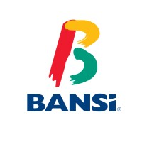

Becario en Finanzas. BANSI SA Julio 2025- Actualidad
Decidí cambiarme al mundo de la Banca Empresarial, una meta que tenía desde el inicio de mi carrera. En mi trayectoria en BANSI, he apoyado en créditos mayores a los 300 millones de pesos, he analizado empresas de varios giros comerciales, he simulado flujos de efectivo de manera automatizada y sobre todo he entendido el mundo del financiamiento.